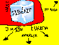

De: La Frikipedia, la enciclopedia extremadamente seria.
De: La Frikipedia, la enciclopedia extremadamente seria. De: La Frikipedia, la enciclopedia extremadamente seria.
| De la serie imperios antiguos: | |||||
| Союз Советских Социалистических Республик | |||||
| |||||
| Lema: ENDUT! HOCH HECH! | |||||
| Himno: Интернационал
| |||||
| 
| |||||
| Capital(es) | Moscú | ||||
| Mayor ciudad | Siberia | ||||
| Lenguas oficiales | Ruso | ||||
| Religión oficial | Atea oficial | ||||
| Gobierno | comunismo | ||||
| Camarrada | Vladimir Putónskin | ||||
| Fecha de fundación | 1917. | ||||
| Caída | 1991(¡Mierda, ni el siglo!) | ||||
| Edad de oro | 60's y 70's | ||||
| Periodo de Estancamiento o reseción | 80's (:S) | ||||
| Máxima Extensión | Todo el bloque comunista... pero sin China Que se le revelaron a los buenos sovieticos | ||||
| Forma de economía | | ||||
| Estados que se despacho | Media Europa (aunque no fue la mitad bonita) | ||||
| Población calculada | 400.000 wasillones de rusos, osos polares, lapones y demás especies polares | ||||
| Moneda | Rublo | ||||
| Zona horaria | -50 horas bajo cero | ||||
| Legado(s) | Las inmigrantes de europa oriental, el Comunismo, el Trostkismo, el Anti-comunismo y Matrioskas por todo el mundo | ||||
| ¿Por que se vino abajo? | En tres letras: E - U - A | ||||
| | |||||
U.R.S.S., famosa unión comunista, creada en Siberia (un lugar muy fresquito), fundada por Lenin, Stalin, Trotsky, Corbachov, Moe, etcétera, etcétera. Posteriormente en la disolución causada por el camarrada traidor corbachov y sus políticas economincas como la Perestroika, la Glasnot que significa apertura de piernas que tenia a por objetivo fundir la cortina de hierro y fabricar balas de paz, porras de paz, chalecos anti-paz, y muchas pero muchas bombas Matrioska, al disolverse quedaron como 93 paises todos con peores problemas económicos que Venezuela
La U.R.S.S (Unión de Repús Sociatas Sovieticas o Unión de Rockeros Sin Sueldo) nació, cuando Siberia), y consiguió echar del poder de Rusia a el Zar de Rusia (lógicamente). La población rusa (a la que el zar ya le había hinchado los huevos con tanta Primera Guerra Mundial y tantas muertes por inanición) aceptó el comunismo, y todo el mundo se unió a la fiesta comunista. Y así comienza la bonita historia de la U.R.S.S
Pues vereis, como os contaba, Lenin se había puesto al poder de Rusia, y esta, cuando el asumió el poder de forma democratica falso de el Antiguo Imperio Ruso ahora vuelto mierda cuando este se encontraba en la primera guerra del mundo mundial, su participación fue corta (la de la USSR, el Imperio Ruso llevaba miles de años en esa guerra) porque se rindieron ante los alemanes en un humillante pacto, el pacto Rivertrooper/Molotov, en el que la USSR sede terreno suficiente para meter 20 veces todos los emigrantes rumanos (eso es mucho) durante ese periodo, la USSR tuvo que pelear contra Lordi). De todas maneras, la U.R.S.S. había ganado la Primera Guerra Mundial.
Tras la primera guerra mundial, se avecinaba la segunda guerra mundial (obviamente), y fue una guerra completita con todo lo que puedes querer en una guerra decente; habia de todo (no como en venezuela) desde kamikazes, bomba atómica en Hiroshima, comunistas, capitalistas, nazis, etc. Que empezó cuándo Hitler al ver el nombre de la Unión de rockeros pensó "a mi me gusta la musica Clásica... a la mierda con la Unión de Rockeros" Al final ganaron los Sovieticos luego de marchar por toda la jodida europa (la parte fea) a pura pata y algunos tanques que andaban a 12 Km/h, ya tenían callos hasta en la comisura del ojete, al llegar a Berlin despues de matar 50 wasillones de nazis cada soldado, El buen Hitler se suicido (o eso dicen todos) y se rindió ante la URSS, pero lo mejor de todo fue lo de Hiroshima, una historia que no viene a cuento para nada pero bueno. Pues al caso, en aquel lanzamiento de la bomba atómica sobre Hiroshima murieron wasillones y wasillones de japoneses (chinos).
La palabra posguerra y entreguerra, cuando nos referimos a la U.R.S.S., se refiere al periodo entre la 2ª Guerra Mundial y la Guerra fría (la Guerra fía tuvo lugar en siberia, un lugar muy fresquito). Así, como en este periodo no hubo nada interesante, excepto que El charly se puso de presidente de este país durante un día, pasaremos directamente al apartado de la Guerra fría.
El telón de acero, fue como una especie de muro de acero, que separaba la U.R.S.S. de los demás países del mundo mundial. La única persona que ha podido fundir el telón de acero ha sido Chuck Norris, tirandose una de sus famosas flatuléncias. El telón de acero, se puede ver desde el espacio, y no la pequeña y mal llamada "gran" muralla china, que los chinos son unos copiones. En la actualidad es un monumento visitable de Rusia ya que han limpiado el suelo de las peligrosísimas minas matrioskas.
Pues vereis queridos lectores y queridas lectoras, la Guerra fría fue muy chunga; se pasaba mucho frío, y además estaba lo del muro de Berlín, que complicaba demasiado las cosas. La Guerra fría duró chorrocientos de años, y sin mencionar el tiempo que se tardó en derribar el muro de Berlín. Pues bien, esta guerra la perdieron los americanos, porque no estaban acostumbrados al frío de Siberia, y las armas se le congelaban al cargar la munición, y los tanques también. O vean una peli de guerra para saber más.
Con la caída del muro de Berlín, la U.R.S.S. perdía su último bastión en Alemania, y con ello la rebelión de todos los países del este de Europa (Albania, Ucrania, Polonia, Uzbekistán, Kazajistán, Kurdiyistán, Nosequéistán,...). Y comenzaba asín la desaparición de la Unión Soviética.
Boris Yeltsin, (no confundir con Boris Izaguirre) fué un falso comunista borrachín, que acabó con el comunismo ruso (inentendible). Dió un golpe de estado con su amigo borrachin Bill Clinton. Durante unos años, pasó a llamarse Rusia, haciendo creer al resto del mundo que se habian disuelto.
Años después, la U.R.S.S. resurgió, y se reconstruyó el muro de Berlín. Actualmente se cree que están cargando misiles con ielo siberiano para iniciar otra Guerra fría. Para más información, vean el video de más abajo, titulado Resurgimiento de la U.R.S.S.
Moscú, a sido, y siempre lo será, la capital de Rusia. Desde la época del zar de Rusia (también conocido como el zorro de Rusia), o incluso desde la prehistoria, Möskuv a sido la capital de Rusia. Numerosos futurólogos están de acuerdo en que Mosküv será durante dos mil años más, la capital de Rusia, y que luego tendrá que renovar el contrato para seguir siendo la capital.
General soviético de la segunda guerra mundial, que venció a los nazis, y construyó el muro de Berlín. Fué condecorado como héroe de guerra, y se le puso una estatua en su honor en la plaza roja. Cuando ya no había más guerra se dedicó a hacer mapas de la U.R.S.S., y se le entregó el Óscar al mejor dibujador de mapas, aunque ni él ni el gobierno de la U.R.S.S. aceptaron este premio, porque tenía procedencia de los Estados Unidos de América.
Gallina entrenada para jugar al tres en raya desde que estaba dentro del huevo por científicos locos soviéticos. A la edad de tres años, fue a Espiña al mundial de tres en raya, donde se disputó la final entre España (su representante era Flipy) contra la U.R.S.S. (su representante era esta lista gallina) en el estadio del Hormiguero, donde ganó la gallina (de cociente intelectual 3) a Flipy (de cociente intelectual -45). Murió media hora después de disputar la final, ya que Flipy, cabreado por la derrota y la humillación, la cocinó y se la comió. Se celebró un juicio acusándolo de gallicidio, siendo condenado a servir como cobaya humana en un laboratorio soviético (el mismo donde se reclutó a Gasparofa).
Después de que Gorvachov, (Un alien controlado mentalmente desde marte) decidiare disolver a la unión soviética, esta se dividió en diferentes entidades, las cuales buscan vengar su desaparición. Estos paises son:
Autor(es):